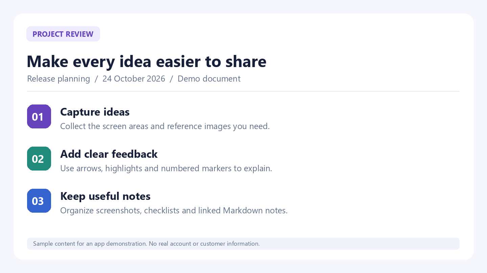

How to annotate Windows screenshots with arrows, numbers and mosaic
Capture a window, point to the problem, obscure details and paste a clear bug report or review image.
Start with a screen worth sharing
A screenshot is more useful when the recipient knows where to look. For a bug report, select the error and enough surrounding context to identify the affected window. For design feedback, capture the component you want to discuss. This walkthrough uses synthetic sample content, not customer data.
1. Capture a region or window
Launch CLIPARY and press Ctrl+Shift+P. Drag to select a region, or click the highlighted window. Capture-to-clipboard is enabled by default. You can also drop an existing image into the app or paste one with Ctrl+V. The capture-after-action setting determines whether the editor opens automatically.

2. Point, label and number the steps
Open the image in the editor. Use the arrow tool to point at the important location, text to describe the change, and numbered markers when order matters. A highlighter or spotlight can draw attention to a specific area. Keep labels short: “Click here”, “Expected value”, or “Step 2” usually communicates more clearly than a paragraph placed over the screenshot.
3. Select what should be obscured
Choose the mosaic tool and drag over the area you want to obscure. This is a manual step: the app does not automatically decide which information is sensitive. Check names, addresses, account identifiers and the surrounding context before sharing. Inspect the saved output as well as the editor preview; mosaic should not be treated as a guarantee that all sensitive content is unrecoverable.

4. Copy or save the edited result
Use Ctrl+Shift+C to copy the edited image and Ctrl+V to paste it into your document, messenger or issue report. Use Ctrl+S when you need a saved file. If the clipboard still contains your original capture, copy the finished result again after your edits. Shortcuts can be changed in Settings; F1 opens the in-app help.
A useful reporting pattern
Use one screenshot for one problem. Put a numbered marker at the relevant control and explain the expected behavior in the accompanying message. If several overlapping captures are needed, arrange them in order and use the stitching feature first. You manually capture overlapping sections; CLIPARY does not automatically scroll the webpage for you.
Watch the real workflow
Recorded in the real CLIPARY desktop app, cropped and edited for pace. Includes English AI narration, captions and music. The demonstration content is synthetic.
Try CLIPARY for Windows
Free for Windows 10/11 64-bit. Built-in OCR and ordinary capture, editing, recording and notes run on your PC. Optional external AI has separate account, tool and provider requirements. Support is voluntary.
Free download from Microsoft